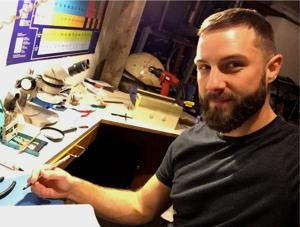
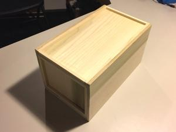
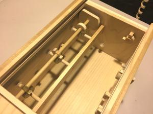
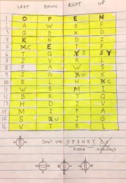

For the 2016 holidays, my family decided to put a spin on the classic white elephant gift exchange by adding a ‘bidding’ element where folks would bid a dollar amount on each gift in hopes of winning it. The gift itself would go to the highest bidder but all the proceeds would be combined at the end and would be donated to a charity – St. Jude Children’s Hospital, in our case. It turned out to be a great idea; everyone had fun and we were able to raise a fair amount that wouldn’t have been donated otherwise.

The trick, however, was coming up with a gift that someone would want to bid the most on without spending a bunch of money. It could be something you found in your basement, or something you made… either way, it needed to be desirable.
I had an idea that was, admittedly, a little boring. It was a journal. Look, if someone wanted to keep a journal, they probably would have started keeping one by now. But I know how much I love my journals and how much I’ve gained by keeping them and sometimes people just need a push! So how was I going to make a ‘boring’ journal not so boring?
Turn it into a mystery! Who doesn’t love a mystery? I decided to put the journal inside a box so no one knew what was in the ‘mystery box.’ It’s the same idea behind why a monster you never see in a horror flick is so much more scary than the ones you do; or why the allure of what’s behind curtain number two is so darn intense… your mind is far better at imagining things tailored specifically to your fears and desires than anyone else could dream up.
So… I needed a box. Simple enough, right? So I built a small, nondescript wooden box with no obvious hints at what could be inside other than its physical size. Additionally, I made it so that the opening – the lid, door, hatch, whatever – was ambiguous, further adding to the mystery. But once that was done, my mind was primed and already racing with ideas on how to further add to the mystery. I came up with the idea of adding a puzzle element to it where a person would have to figure out the solution to an embedded puzzle in order to get the box open.

I thought of switches and levers, actuators and spring-loaded contraptions, but ultimately settled on the idea of latch system that uses a spinnable cam which, when oriented the correct way, would release the lock. To keep it relatively easy to build (remember, I’ve never built anything like this before – it was my first try!), only four turnable knobs would be required for the actual puzzle. So to make it more difficult, I added many more (16 total) identical-looking knobs. I settled on this number out of necessity; I didn’t even want the orientation of the box to be obvious and the way the four main knobs were arranged, it required an additional 12 more knobs to make the top, bottom, and sides indiscernible.
So with all that figured out and built, it was on to the task of developing an actual -solvable- puzzle. See, the way I originally imagined it was that the person would be presented with a plain box with numerous ambiguous knobs and would need to figure out on their own not only that you need to turn them to open the box, but also which ones and in which order and configuration! This quickly made me realize this puzzle would be literally mathematically impossible to solve given the total number of all possible configurations and the average human lifetime – ha!
So I tossed around the idea of using various characters placed around each knob to indicate the correct way each knob should be oriented. I thought of using basic shapes or numbers, or maybe even Chinese characters, but ultimately settled on letters since they’re something people are most familiar with. And as an added bonus, I could actually develop some type of word puzzle out of them, further contributing to the puzzle aspect. There would be four letters per knob, oriented like the n – s – e – w of a compass rose.

I started with the idea that I would use one unique character per main knob that would appear once and no where else on the box. (So, the letter “s” may be used two or three times but the letter “y” would be used only once, for instance.) It would be left up to the person solving the puzzle to notice this and figure out that the knob should be oriented that particular way. But again, that seemed just a little too difficult, so to give a little more direction I made those unique characters actually spell something: “key.” Okay, that’s somewhat clever, and it takes care of the three ‘locking’ knobs, but what about the one main ‘opening’ knob? Well, I made the letters around that particular knob the only one that you could spell a word with: “open.” (All the other letters on all other knobs were random gibberish that didn’t spell anything.) What’s more, you would have to start on the ‘o,’ then progress systematically through the word ending on ‘n,’ like you were actually spelling ‘open,’ to finally unlock the box. (Yay! That all makes sense…)
But, there’s one more twist. You still didn’t know how the box opens. Looking back, this would be the only thing I would modify. I actually liked that the lid was a puzzle in and of itself, and it actually worked great, but it simply lacked feedback. Once the person solved the puzzle and got the lid unlocked, they had no idea it was time to actually open the box. They hadn’t been ‘prompted’ to do so! If I would have had just a little more time, I would have came up with some sort of spring-loaded mechanism that would open the lid once the puzzle was solved. Oh well, next time right?

Surprisingly, those were the types of things that were the most rewarding! Not coming up with the mechanisms or the actual construction of the box itself, but the realization of the importance of feedback when it comes to Puzzle/Game Theory, and subtlety and nuance when it comes to clue-making. Moreover, I never thought of myself of someone who is interested in things like that (despite how many video games I play). THAT’S why it is so important to try new things; start projects you may not initially be interested in, or go somewhere you never thought you wanted to go, because you may discover things about yourself you never knew!
Lastly, I tested out my puzzle box on a few friends at work and found out it was still just a little too hard. When I first handed the puzzle to people they immediately started turning knobs and putting their ear to the box trying to listen for any clues. Unfortunately for them (and me!), the internal mechanism wouldn’t give away any clues and they were just wasting their time trying. So, a written clue was in order. (That ended up being hardest part of the entire project: coming up with a good, clever clue that didn’t give away the solution!) I came up with a ton of variations involving the words ‘key’ and ‘open’ and even had those same friends at work trying to think of different puns and poems… I decided on the phrase, “the key to open the box is in the letters.”
But now when folks were presented with the box and the clue, they would focus on the word “box” for some reason and tried spelling that, among a bunch of other non-applicable words. (Uh! What’s wrong with you people!?) So I took out the word “box” and had to underline “key” and “open,” leaving: “the key to open is in the letters.” I probably didn’t have to underline those two words because it probably made it a little too easy, but it still seemed people needed it and it still took them a good while to figure it all out.
All in all, this was one of my favorite projects I’ve ever done because not only was it something different from my normal projects, it also turned out better than I had imagined it would, and I learned a ton from it! I’m definitely planning on making more of these puzzle boxes; I’m looking forward to playing with different mechanisms and trying out new techniques.
-There is one final thing I’d like to point out that I wasn’t able to feature in the puzzle itself: The way I made the locking mechanism was that the ‘open’ knob started on ‘o’ and wasn’t able to turn at all. If you turned the first ‘lock’ knob to ‘k,’ the ‘open’ knob was able to be turned from ‘o’ to ‘p’ but no more. If the second ‘lock’ knob was turned to ‘e,’ the ‘open’ knob was able to be turned from ‘o’ to ‘p’ to ‘e.’ It is only when all three ‘lock’ knobs were turned to ‘k – e – y’ that you were able to fully spell ‘o – p – e – n.’ So, there was a bit of feedback available in the puzzle, it was just poorly presented. I also limited a coupe other knobs in how far they would rotate, turning them into ‘decoy’ knobs! That was a great way to fool people…